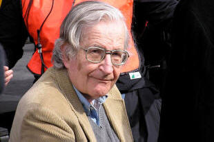
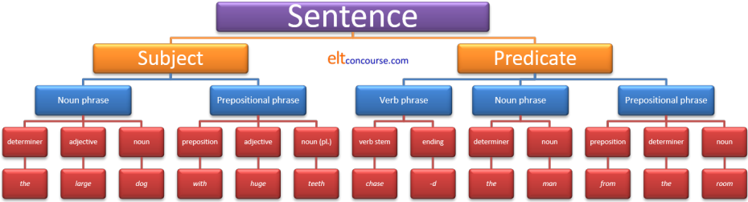
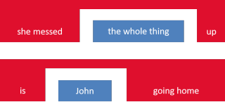
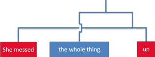
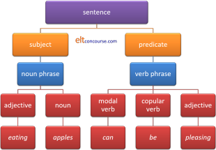
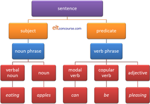
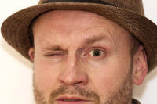
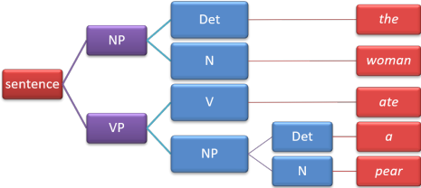
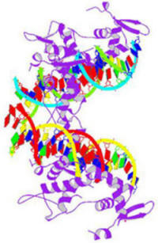

Chomsky

Why does one writer get a whole guide to himself?
Quite simply because he is so influential. His ideas penetrate nearly all areas of the study of language. Henk Van Riemsdijk, himself an influential figure and Professor emeritus of Linguistics at Tilburg University, The Netherlands, writes:
I had already decided I wanted to be a
linguist when I discovered this book. But it is unlikely that I
would have stayed in the field without it. It has been the single
most inspiring book on linguistics in my whole career.
In Chomsky
(2002)
Frank Palmer (1971:135) has said of the book that it was
the book that first introduced to the world the most influential of all modern linguistic theories, 'transformational-generative grammar'.
The book in question was: Syntactic Structures, first published in 1957.
Word of warning: what follows is an overview of the classic
version of Chomsky's theories concerning Transformational-Generative
Grammar (TGG). As such, it can only do some injury, minor, it
is hoped, to the complexities and subtleties of the approach.
For more, consult the literature. There are some references
at the end but there is a wealth of literature in the field.
In addition, there is Chomsky's own website at
www.chomsky.info
and many more or less reliable websites covering the area. The
briefest of overviews concerning some theories of Chomsky in cartoon format can be viewed at
https://m.youtube.com/watch?v=7Cgpfw4z8cw.
 |
Part 1: Transformational-Generative Grammar (TGG) |
Background: Structural Linguistics
Attached to the name of Bloomfield and his followers,
Structural Linguistics is/was the attempt to apply a truly scientific
approach to grammar. Although all linguists are concerned to
study structure, or patterns and regularities, in language, of
course, Bloomfield's central concern was with a mechanistic and
purely empirical approach to language study, looking for structure,
not meaning.
Structural linguistics defined the essential building blocks of
language as phonemes and morphemes, the latter consisting of
combinations of the former, and the approach to analysing grammar
was to divide the language up into its 'Immediate Constituents'.
Hence, we have IC analysis: Immediate Constituent analysis.
The details of IC analysis need not concern us here but the result
was to analyse language according to a branching tree diagram.
IC analysis can be quite illuminating. Here's an example of
what is meant. If we analyse the sentence
The large dog with huge teeth chased
the man from the room
into its immediate constituents we
can do so like this:

(Here, we have not inserted a row of phonemic analysis below the
level of morphemic analysis but it is possible to do so and break
down each morpheme into its constituent phonemes so we would have,
e.g.:
the = /ð/ = /ə/
large = /l/ + /ɑː/ + /dʒ/
dog = /d/ + /ɒ/ + /ɡ/
etc. and so on for each morpheme.)
This kind of analysis can be fruitful because it is simple to
see that we can substitute the sequences of morphemes in the bottom
row with others and, while maintaining the same analysis, apply it to
any number of sentences. We can analyse, e.g., a sentence such as
The old man with grey hair dropped his keys
in the street
which follows the same pattern:
| Determiner | Adjective | Noun | Preposition | Adjective | Noun | Stem | Ending | Determiner | Noun | Preposition | Determiner | Noun |
| the | old | man | with | grey | hair | drop | -(p)ed | his | keys | in | the | street |
While such an analysis works well for many examples of well-formed sentences, there are some problems.
 |
Problem 1: embedding |
This all works very well when sentences behave themselves and come along quietly with all the constituents in order. However, the first problem strikes when we consider sentences such as:
- She messed the whole thing up.
- Is John going home?
The problem is that while it's easy to see that the verb phrase in
sentence 1. is
mess + -ed + up
and in sentence 2. it is
primary auxiliary + stem + -ing
no simple tree diagram will
allow this separation of verbs by objects (sentence 1.) or verbs by
subjects (sentence 2.).
It has been suggested that one could represent these sorts of embedded ideas this way:

or we could have crossing lines like this:

but that defeats the purpose because IC analysis depends on the possibility of substituting sequences with other sequences and discontinuous phenomena like these are not sequences at all.
 |
Problem 2: ambiguity |
The issue here is to know how to divide the
constituents up and what class of word or phrase to assign to each.
Try
analysing:
Eating
apples can be pleasing
this way and you'll see what is meant.
What's the difference between the following?
|  |  |
Click here when you have seen the difference.
The only difference is in how we describe the first word. If it's an adjective then it refers to the fact that the sorts of apples we call eating apples can be pleasing but if it's a noun (i.e., a gerund), then we are referring to the act of eating apples which can be pleasing. If we remove the modal, it becomes clear:
- Eating apples are pleasing.
- Eating apples is pleasing.
A more famous example of this problem
for structural
linguistics is:
Visiting aunts can be boring.
Is it the action of
visiting aunts or the aunts themselves which/who can be boring?
There is a guide to ambiguity on this site, linked at the end, which
considers this sentence in particular (and accuses Chomsky of
cheating a bit).
Transformational-generative grammar to the rescue |
Clearly, Chomsky's ideas have two parts so we'll take them individually.
 |
Transformational |
Instead of relying on tree diagrams to represent how sentences
were constructed from individual morphemes, Chomsky was concerned to
discover the patterns by which one sentence could be transformed
into another. The classic example is the passive in English.
How is
Mary allowed Peter to go home
transformed into
Peter was allowed to go home, by Mary?
Here's how
(Chomsky, 2002:43):
If S1 is a grammatical sentence of the
form
NP1
— Aux — V— NP2,
then the corresponding string of the form
NP2
— Aux + be + en — V — by + NP1
is also a grammatical sentence.
To explain:
S1 is the first or kernel sentence.
NP1 and
NP2 are the noun phrases (Mary
and Peter in our examples).
V is the verb (allow in our examples)
Aux stands for the tense marker,
not necessarily an auxiliary verb, (the past of allow and
be in our examples)
en is the marker for past participle.
So the rule for transforming the active, kernel
sentence into the passive is:
- put NP2 first
so we get:
Peter ... to go home - add the
tense of the verb be
so we get:
Peter was ... to go home - add the past participle of the main
verb
so we get:
Peter was allowed ... to go home - add by
so we get:
Peter was allowed by .... to go home - insert NP1
so we get:
Peter was allowed to go home by Mary
Easy, and the last two steps are optional, of course, because by step 3. we have a well-formed passive-voice clause.
|  |
So what? |
So quite a lot.
Instead of the cumbersome tree diagrams for every sentence, we now
have a set of rules to work from to transform kernel sentences
(i.e., the original from which we make the transformations) into
others and we have a way of dealing with both the embedding problem
and the ambiguity problem we met above.
 |
Embedding |
For example, if we take a sentence such as
The man who was in the
bar spoke to me.
the structural linguistics analysis
would either have lines crossing each other or result in the kind of
block diagram we saw above, like this:
However, we can look for the kernel sentences which make it up and then work out the transformation rules. Like this:
- The kernel sentences are:
- The man spoke to me.
- The man was in the bar.
- The transformation rules are:
- Place the second sentence after the first NP in the
first sentence.
That gives us:
The man the man was in the bar spoke to me - Replace the second NP with who.
That then gives us:
The man The man who was in the bar spoke to me
- Place the second sentence after the first NP in the
first sentence.
We can do the same thing with other forms of relative pronoun sentences, transforming, for example:
- I cut down the tree
- The tree was hanging over the gate
by using similar rules to generate:
- I cut down the tree the tree was hanging over the gate
which involves placing the second sentence after the noun phrase in the first sentence - I cut down the tree the tree
which / that was hanging over the
gate
which involves replacing the second noun phrase with which or that
Other relative pronoun sentences can be generated slightly differently so from:
- I cut down the tree
- The tree was hanging over the gate
we apply other rules:
- Move the first sentence to the front of the second and
produce:
I cut down the tree the tree was hanging over the gate - Delete the first noun phrase to produce:
I cut down the tree the tree was hanging over the gate - Delete the second verb phrase and produce
I cut down the tree was hanging over the gate
This is called the relative transformation, by the way.
 |
Disambiguating |
The often-cited example of an ambiguous statement which
transformational-generative grammar can deal with is:
The
shooting of the hunters was terrible.
The ambiguity, of course, is that we don't know whether the
hunters were bad shots or whether they were shot.
Here's how TGG can unravel the problem:
- The key noun phrase is the shooting of the hunters
- This noun phrase can come from two possible kernel
sentences:
- The hunters shot (something)
- The hunters were shot
- Once we know which of the kernel sentences produced the noun phrase we have disambiguated the sentences.
This is an example of the workings of deep structure. I.e., the structure of the sentence which derives from the nature of the kernel sentences and is below the surface structure traditionally analysed in structural linguistics. There are two possible deep structures here identifiable from the two possible kernel sentences.
As another example, we can take our earlier
sentence
Eating apples can be pleasing.
Can you apply
the transformational approach to disambiguating the two meanings?
Click here when you have.
- There are two possible kernel sentences:
- Something can be pleasant
- (Someone) eats apples
- If the sentence derives from (can be transformed from) a., the meaning is that we are referring to apples grown to be eaten rather than cooked.
- If the sentence can be transformed from b. then the meaning refers to the act of eating apples.
 |
Generative |
The idea of a grammar being generative is the second string of the theory.
Simply put, this means that the grammar must be capable of generating 'all and only' the grammatical sentences of the language. This does not mean that it must do so, only that it must be capable of doing so. For example, a generative grammar must be able to produce She likes apples but not Like apples she and so on.
There is a fundamental difference of approach here from that taken by structural linguists.
- Structural linguists were concerned to identify the sentences of the language and then analyse them. In other words, they collected a corpus of data and then analysed the data working from the phonemes making up each morpheme upwards to make the tree diagram we are familiar with.
- A generative approach is not concerned with what has been
observed but with what is possible. A corpus of data (even
a huge, modern computer-based one),
however large, cannot contain all the sentences of a language
and will inevitably miss some out. This is because any
language contains an infinite number of
possible sentences.
For example, I can say,
The man who was in the room was reading.
I can then add another relative clause to make
The man who was in the room which was on the second floor was reading
and I can continue to add clauses to make, e.g.,
The man who was in the room which was on the second floor which was part of the building which was in the High street was reading
and so on ad infinitum. There is theoretically, no limit although the sentence will, of course, become unmanageable and harder and harder to understand as it grows. That's not the point; the point is that it is theoretically possible never to come to the end of the sentence.
In Syntactic Structures, Chomsky demonstrates the generative nature of this sort of grammar by considering the form of the negative in English. This is not the place to repeat all the steps but the conclusion is (op cit:62):
The rules (37) and (40) now enable us to derive all and only the grammatical forms of sentence negation
As you may imagine, rules 37 and 40 are somewhat complex but that they can be used to produce all and only the grammatical forms is not in dispute.
Competence and performance |
The key here is that TGG is not concerned with analysing that which is actually said but with establishing the rules concerning what can be said. For many, involved as they are in analysing what people actually say and write, this is a central weakness of Chomsky's position.
- What is actually said by speakers of the language is called performance and is not the concern.
- What is possible for a speaker to say is called competence and is the concern.
According to the theory, then, what happens is that speakers of a language work to an internalized set of rules from which they generate grammatically accurate language. The proper concern of grammar studies, then, is to find out what these rules are and that cannot be done solely by looking at what is said but by considering what can be said.
There are, however, obvious problems with this simple distinction:
- Who judges what is and is not grammatical? Is, e.g.
This car should have been being serviced
grammatically correct? At a formal level, none of the 'rules' of the language has been transgressed but many would reject such a sentence.
Chomsky's response to this charge was to rely on what he termed intuition and that is a native speaker's judgement of correctness and appropriacy. - How complex do we allow sentences to be? Is, e.g., our
example above
The man who was in the room which was on the second floor which was part of the building which was in the High street was reading
acceptable? If it is, how about something like
The old, tall, talkative and somewhat eccentric man who was in the long, thin, well-lit, poorly decorated room which was on the second floor which was part of the newly-built but apparently only half-finished building which was in the bustling and crowded High Street which was in the centre of the small but attractive and rapidly growing town which was in the County of Kent which is in the South-East corner England was reading a book which he had recently bought from a shop on the corner?
Native speakers know that they need to draw a line somewhere but it is extremely difficult to generate a rule to say where that line lies.
Re-write rules |
Re-write rules look similar to the structuralist tree diagrams we have seen above but they are different insofar as they are intended to generate grammatical sentences rather than simply analyse them. Here's an example to generate (not simply analyse) the sentence:
The woman ate a pear.
Breaking this down, we can get:
| 1 | S | → | NP + VP | i.e., the Sentence should be re-written as Noun Phrase + Verb Phrase |
| 2 | VP | → | V + NP | i.e., a Verb Phrase consists of a Verb + a Noun Phrase |
| 3 | NP | → | Det + N | i.e., a Noun Phrase consists of a Determiner + a Noun |
| 4 | V | → | ate | i.e. the verb in this case is the past form of eat |
| 5 | Det | → | the, a | i.e., there are two distinct determiners (both articles) |
| 6 | N | → | woman, pear | i.e., there are two nouns |
We can, of course, represent this sort of phrase structure
analysis in the same kind of branching tree diagram we saw above.
So we get:

What is exemplified here, by the way, are PS-rules (phrase structure rules).
There are two things to note:
- Rules like these will generate a number of different
sentences, e.g.,
The woman ate the pear
A woman ate the pear
A woman ate a pear.
The rules will also generate unacceptable sentences, however, such as
The pear ate the woman
A pear ate a woman
The pear ate a woman.
It will also generate the truly ungrammatical:
A man stood the forest
A person arrived a hotel - We can combine re-write rules with transformational rules
and that, as we saw above, can transform
The woman ate a pear
into
A pear was eaten by the woman
by the removal of the second noun phrase to the front of the sentence and making changes to the verb as above.
In other words:active passive NP1 — Aux — V — NP2 → NP2 — Aux + be + en—V— by + NP1 The woman tense of verb (ate) the pear transforms into The pear tense of be (was) participle form (eaten) by the woman
However, getting around the problem of generating statements such
as
A pear ate a woman
A person arrived a hotel
is not an easy matter.
This is done by stating upfront what kind of main verb is permitted
with what kind of noun. We forbid a certain class of noun
(i.e., here, ones as subjects which are not animate) and certain
classes of verb (i.e., ones which are not transitive). Then
the restrictions only have to be stated once in either our
phrase-structure or transformation rules which we apply.
So we get:
Now this form of phrase-structure analysis cannot generate
The pear ate the woman
or
A person arrived a hotel.
because The pear is not animate and arrive is not
transitive.
What's more, applying these restrictions to the kernel sentence
means that our transformational rules cannot produce
The woman
was eaten by the pear
but will generate
The pear was eaten
by the woman.
The rules will also produce odd-sounding sentences such as
The bear ate the house
although we could get around that by
specifying the kind of noun which slots into the
NP2 position
but, recall, we are concerned with
possible sentences, not language that is
actually produced.
Such an approach, combining the phrase-structure
rules with transformational rules, can generate, for example,
- The dog broke the window.
- The window was broken by the horse.
- A picture was stolen by a thief.
- The man injected the dog.
- The vet cured the dog.
- Some men broke the door.
- Those people enjoyed the fruits.
and so on and so on. Each and every sentence produced in this way will be grammatical. That is the power of phrase-structure rule generation.
 |
Part 2: The Language Acquisition Device (LAD) |
We have seen above that the rules governing the generation of
grammatically correct sentences are subtle and at times very
complex. The question naturally follows:
How do we learn the rules?
A behaviourist view of learning would state that we simply hear
and repeat correct utterances in our first language and attend to
the feedback (positive or negative) that we get from, e.g., parents
and other adults.
We adjust what we say according to the type of feedback we get like
this:
- Reject language behaviour which is negatively or not reinforced.
- Commit language which seems to be approved to our longer-term memory.
 |
Examples of the problem |
As an example, we'll use question formation in
English and start with a declarative sentence:
A unicorn is in the garden
and make the question:
Is a unicorn in the garden?
and that was simple enough because the rule is to take the
primary auxiliary verb and move it to the beginning. That
means we can generate any number of correct interrogative forms by
applying the simple rule so, for example:
A man is outside → Is a man outside?
You can see it → Can you see it?
John was in the garden → Was John in the garden?
and so on for, quite literally, millions of sentences.
However, now make a question from:
A unicorn which has a golden horn is in the garden
Click here when you have done that.
The
question now is that if we apply the rule we induced from the first
example (i.e., move the auxiliary verb to the beginning), we get:
Has a unicorn which a golden horn is in the garden?
and that's nonsense.
The rule now is: move the second auxiliary verb to the beginning but
leave the first one alone. Then we get the acceptable (if
slightly unusual):
Is a unicorn which has a golden horn in the garden?
That is a complex and non-intuitive rule. However, it has been demonstrated that all children by around the age of
four can do this unfailingly and never produce the nonsense.
Here's a second example of the issue, one often cited as counter
evidence to a behaviourist view of language acquisition.
When we decide whether or not to put an -s ending on the
base form of the verb requires us, in English, to make 4 decisions:
- whether the verb is in the 3rd person
- whether the subject is singular or plural
- whether the action is present tense
- whether the action is in a simple, progressive or perfect aspect
Then, having considered those four points, to learn the system children must:
- Notice that some verbs come with an s- ending in some sentences but not in others
- Search for the grammatical causes of this phenomenon (rather than accepting it as random variety)
- Sift out all the irrelevancies and identify the causal factors (1 to 4 above)
By around three years of age, children get this right at least
90% of the time.
Not only that but en route they use it inappropriately (bes,
gots etc.) which they can't have heard so are not
imitating because those malformed examples cannot have been heard.
The fundamental problems Chomsky (and others) see with how children manage to produce such complex grammar so early are:
- There aren't enough data:
Children acquire language very quickly and are making complex, grammatically correct sentences at a very early age. By this stage in their development, they simply haven't been exposed to adequate information about the language to be able to do so.
This is a debatable point because, in fact, normally brought up children are exposed to enormous amounts of data, certainly enough to base a linguistic corpus on before they are five years old. - The data are not always grammatical:
Studies show that carer-speak is focused on meaning not structure and that very young children in particular are exposed to a lot of language which is ungrammatical. If that is the sole source of their production, much of it would remain at the 'Get choo-choo' level of speech.
This, too, has been challenged and, for example, one study found that of 1500 utterances analysed, only one was ungrammatical (or a disfluency, in the jargon). The study found that the speech of carers directed towards children was 'unswervingly well formed'
(Newport, Gleitman and Gleitman, 1977:121, cited in Moerk 2000:96) - Reinforcement is unreliable and inconsistent:
- adults do not consistently respond positively to grammatically correct utterances. They respond to meaning (and sometimes cuteness) more often than not, however malformed the child's language output is.
- adults do not always provide loud and enthusiastic reinforcement (as the behaviourist theory would require). They often speak quietly, or even not at all, in response to whatever the child produces.
Chomsky states it this way:
Language is not a habit structure. Ordinary linguistic behaviour characteristically involves
innovation, formation of new sentences and patterns in accordance
with rules of great abstractness and intricacy.
(Chomsky (2003) p 349)
There's an allied problem that, although many animals communicate
with each other (sometimes sending quite sophisticated signals),
only humans have developed such a complex and subtle system of
communication: language. (And if you have trouble with that
idea, try the guide to theories of language evolution, linked
below.)
The conclusion is that something else is going on.
What is going on according to Chomsky is that the child is using a genetically inherited Language Acquisition Device which is hard-wired in the structure of our brains. We are, therefore, inherently prepared to analyse the structure of whatever first language(s) we are exposed to as infants.
What this means is that, before we even leave the womb, our
brains are prepared for the kinds of phrase structures and
transformational rules we will need to process the language we hear.
Some have compared this to a kind of internal switchboard with which
we can categorise input making guesses and assumptions such as
"Aha! This language uses a Subject - Object - Verb ordering but
seems to place adjectives after nouns"
and so on.
How this works lies in the field of first-language acquisition
theories, to which there is a guide on this
site (linked below).
An allied concept is known as the Critical Period Hypothesis which is the source of a good deal of debate concerning its existence and, if it exists, its definition. The two key issues are:
- The definition.
Many theorists will claim that it starts around the age of three and stops at around the age of 13 (or so) by which time it becomes much more difficult for people to acquire native-like use and pronunciation of the target language. - Whether and what extent the LAD is available to adults.
The assumption is often that children acquire a second or subsequent language quite easily because, some say, they retain access to the LAD. After a certain age, it is argued, people have to rely on less efficient generalised learning mechanisms. An intermediate position is taken by those who contest that some elements of the system remain available but some are forever lost to adults, particularly the ability to attain native-like pronunciation.
 |
The evolution of the ability to process language |
There is, unsurprisingly, some debate among evolutionary biologists concerning how such a mechanism may have evolved. Recent genetical research is pointing to a set of genes including one called FOXP2 which looks like this:

It would be a gross oversimplification to dub this 'the language gene' as much else, including the interactions between this gene and a range of others and with the environment, is involved in the ability to process language. FOXP2 is what is known as a transcription gene. It does not have a direct effect but it acts to switch on, or off, other genes. What these other genes are exactly and what they do is still not fully understood. However, the gene appears to be central to our ability to process and produce language and people who lack it or in whom it is mutated or inactive cannot handle language. Incidentally, this gene has been identified in the DNA extracted from Neanderthal bones (and it also occurs in echolocating bats and songbirds).
There is a good deal more about theories concerning the evolution of language in the guide, linked below.
Summary
The LAD can be visualised as operating in combination with phrase-structure and transformational rules something like this:

 |
Part 3: Universal Grammar (UG) |
An allied theory is that there is, therefore, something called
Universal Grammar. This is supposed to be a set of categories
and rules common to all languages, no matter what their individual
grammatical structures are like and no matter what sorts of
languages they are (isolating, agglutinative, synthetic and so on).
The basis for this reasoning is that without such a UG, children
would have nothing on which to use the LAD.
Pinker sums up the viewpoint of those who accept the idea of a Universal Grammar like this:
According to Chomsky, a visiting
Martian scientist would surely conclude that aside from their
mutually unintelligible vocabularies, Earthlings speak a single
language
Pinker, 2007: 232
This has obvious implications for teaching:
- If a UG exists then our learners already have the concepts of things such as noun phrases, adjectives, verb phrases and so on and can use these universal concepts to understand the structure of a language they are learning.
- It is not, in other words, new to them that we can use the kinds of tree diagram, phrase-structure analysis we saw above.
- It will also not be new to them that we can, by employing comprehensible rules, transform a set of kernel sentences into a new structure.
Not to take advantage of learners' inherent knowledge would seem, therefore, to be somewhat perverse, wouldn't it?
 |
The sceptics |
There are many, however, who are deeply sceptical of the sustainability of many of Chomsky's theories (with the possible exception of a general acceptance that humans are, indeed, genetically disposed to learn languages).
 |
Scepticism #1 |
Studies in comparative linguistics reveal that the existence of language universals is questionable. Evans and Levinson put it this way:
Languages are
much more diverse in structure than cognitive scientists generally
appreciate. A widespread assumption among cognitive scientists,
growing out of the generative tradition in linguistics, is that all
languages are English-like, but with different sound systems and
vocabularies. The true picture is very different: languages differ
so fundamentally from one another at every level of description
(sound, grammar, lexicon, meaning) that it is very hard to find any
single structural property they share. The claims of Universal
Grammar, we will argue, are either empirically false, unfalsifiable,
or misleading in that they refer to tendencies rather than strict
universals.
Evans & Levinson, 2009:2
Evans and Levinson, and others, go on to point out that the supposed 'big four', nouns, verbs, adjectives, and adverbs, are not, in fact universals of human language at all. There are languages which cope happily without adverbs and some without adjectives (Lao, for example). The jury is still out (and has been for over 100 years) considering whether there exist languages without verbs or nouns but there are certainly languages which combine verbs with nouns so that something like the verb cut will vary depending on what is being cut so the expression for cutting wood, for example, will be a different verb from cutting meat and so on.
On the other hand, there are word-class categories in some languages
which do not have equivalents in others. Examples are the
classifiers which exist in many East Asian languages, ideophones
(single words to describe entire events or states) and obscure (to
speakers of Indo-European languages) categories such as positionals
(which refer to how objects are arranged in space)
and coverbs (which function a little like delexicalised verbs in
English but are syntactically unique).
They sum up, op cit.: 14 like this:
the great variability in how languages organize their word-classes dilutes the plausibility of the innatist UG position
Scepticism #2 |
The other connected criticism directed at Chomsky is his dependence on the analysis of just one language: English. He defends the position, unapologetically like this:
I have not hesitated to propose a general
principle of linguistic structure on the basis of observation of a
single language. The inference is legitimate, on the assumption that
humans are not specifically adapted to learn one rather than another
human language ... Assuming that the genetically determined language
faculty is a common human possession, we may conclude that a
principle of language is universal if we are led to postulate it as
a ‘precondition’ for the
acquisition of a single language.
(1980, p. 48)
The counter argument to this is that, in fact, languages differ
very fundamentally from English in an almost infinite number of
ways. Many, for example, will not even have a recognisable
passive structure or recognisable embedded relative clauses.
In some languages, for example, verbs contain adjectives and in
others, adjectives themselves are marked for tense like verbs.
Rare and, to many, exotic languages exhibit a bewildering and
unfamiliar set of structural and lexical systems which cannot be
interpreted using Chomskyan grammar. generative or otherwise.
Some, e.g., Tofa (a Siberian language) has a suffix (-sig)
which may be appended to any noun and carries the meaning of
smells like. Others may have a range of affixes which
denote particular sounds and so on. Even superficially simple
concepts such as wh-words may vary across languages which
require the speaker to think about the type of noun in consideration
before selecting the correct form of How many ...? to use.
Even superficially simple verbs such as go and give
may be rendered in ways which require the speaker to consider the
direction and type of travelling which is being undertaken or the
nature of the object of the verb give. Such
subtleties are not, it seems, accessible through transformational
generative grammar of the sort that Chomsky outlined.
The issue here is that many cognitivists are not particularly
interested in or well informed about the possible structures of
languages with which they are unfamiliar and the counter argument is
that language typologists are too interested in the minutiae of rare
language structures to see the bigger picture. The truth may
lie somewhere in between.
Scepticism #3 |
Chomsky was concerned, in his words, to learn something about human nature via the task of studying the properties of natural languages. (Chomsky, 1974:4)
Unfortunately, many argue, this has been interpreted so narrowly
so that the content of what people say has been lost from the task
of studying the properties of natural languages. Chomsky
himself (ibid. emphasis added) refers to the
structure, organisation,
and use of
languages but the last part has been neglected. He also,
incidentally, refers to languages in the plural which goes some way
to countering the objections above.
The argument goes on that we cannot understand people's languages if
they are divorced from their cultural and social contexts and
studied in a vacuum.
With reference to language teaching and English Language Teaching in
particular, Hymes stated (1971:278):
There are rules of use without which the rules of grammar would be useless.
For example, a rule of use in English-speaking cultures is that
direct statements of wishes are generally perceived as rude so they
are normally tempered or rephrased to provide some distance.
It is perfectly possible in English and probably in all languages to
say:
I want that
or
Give me a coffee
but, in English and a range of languages, there is a rule of use
which disallows such directness and requires something like:
I would like that
or
Please give me a coffee.
Honorifics, too, are subject to rules of use just as strict as
rules of grammar. English has a fairly simple system requiring
honorific use in some settings (courtrooms, schools, formal meetings
and so on) but Japanese, to take a well-known example, appends
honorifics to nouns and verbs in a complex manner which is not,
arguably, something that structural linguistics of any sort can deal
with adequately.
So, before we get too enthusiastic about using Chomskyan theories to inform our teaching we should remember that he was addressing the ways in which:
- the language is structured at an abstract level (i.e., at the level of competence not performance).
- our first (not subsequent) languages are acquired.
Chomsky is not fundamentally concerned with second language teaching and learning. That his theories may inform those who are, is another matter.
| Related guides | |
| Krashen and the Natural Approach | for the guide to this set of hypotheses |
| how learning happens | for a general and simple overview |
| first-language acquisition | for a guide to some current theories and how they may be relevant to teaching languages |
| second-language acquisition | for a guide to some current theories |
| language evolution | for the guide reviewing some major theories in the field |
| language, thought and culture | for an overview of theories linking language and thought and whether one determines the other or vice versa |
| input | for a related guide concerning what we do with the language we hear and read |
| ambiguity | for the general guide to other forms of ambiguity in English |
| types of languages | for a guide relevant to Universal Grammar |
| communicative language teaching | for more on a non-structural view of teaching and learning |
References:
Chomsky, N, 2002, Syntactic Structures (2nd Edition), New
York: Mouton de Gruyter
Chomsky, N, 1980, On cognitive structures and their development:
A reply to Piaget, in: Language and learning: The debate
between Jean Piaget and Noam Chomsky, pp. 35–52, Harvard, Mass.:
Harvard University Press
Chomsky, N, 1975, Reflections on Language, New York:
Pamtheon
Chomsky, N and Otero, CP, 2003, Chomsky on Democracy & Education,
Psychology Press
Evans, N & Levinson, S, 2009, The Myth of Language Universals:
Language diversity and its importance for cognitive science, in
Behavioral and Brain Sciences, Cambridge: Cambridge University Press
Hymes, D, 1971, On communicative competence, in Pride, J & Holmes
J (Eds.), Sociolinguistics, London: Penguin
Lyons, J, 1970, Chomsky, New York: Viking Press
Moerk, EL, 2000, The Guided Acquisition of First Language Skills,
Stamford: Greenwood Publishing Group
Palmer, F, 1971, Grammar, Harmondsworth: Penguin Books
Pinker, S, 2007, The Language Instinct, New York, NY:
Harper Perennial Modern Classics
(For more on FOXP2 and its role in language development, try the
eminently accessible ScienceDirect article at
https://www.sciencedirect.com/science/article/pii/S0002929707629024)